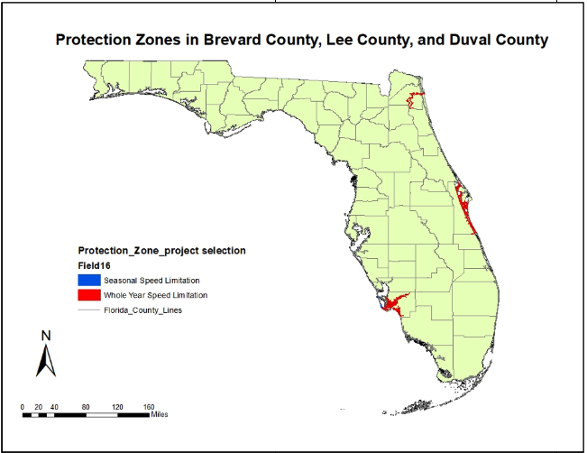
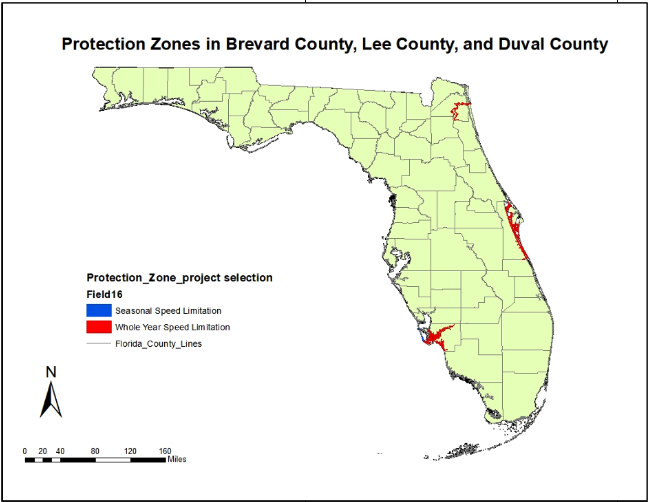

Analysis of Florida Manatee Collision Records and Protection Zones
Intro to GIS -2022 Fall
Final Project
Chhimi Sherpa,Yu-Yun Ruan
Introduction
Florida manatees, known as sea cows, face declining populations due to factors like watercraft collisions, loss of seagrass, habitat loss, invasive plants, and climate change. They are keystone species crucial for marine ecosystem health. Protected by the U.S. Endangered Species Act, they have conservation policies and speed zones to reduce boat-manatee collisions. This project utilized Kernel Density in ArcGIS to investigate rising manatee mortality despite protection zones.
Result
.gif) 

Conclusion
This project identifies factors contributing to the rise in Florida Manatee and boat collision records within protection zones. Key findings emphasize the need for stricter monitoring of speed zones and human activities in counties like Lee, Brevard, and Duval. The correlation between manatee mortality and boat activities is evident, especially in Duval County, where increased watercraft density warrants continuous observation records for future research on manatee population dynamics and boat interactions, which are essential for preserving Florida Manatees in the ecosystem.